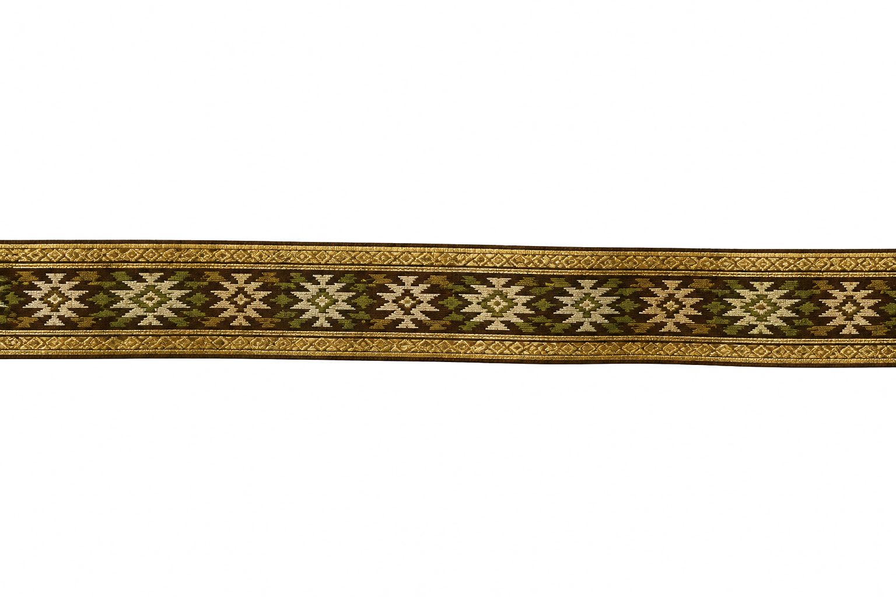
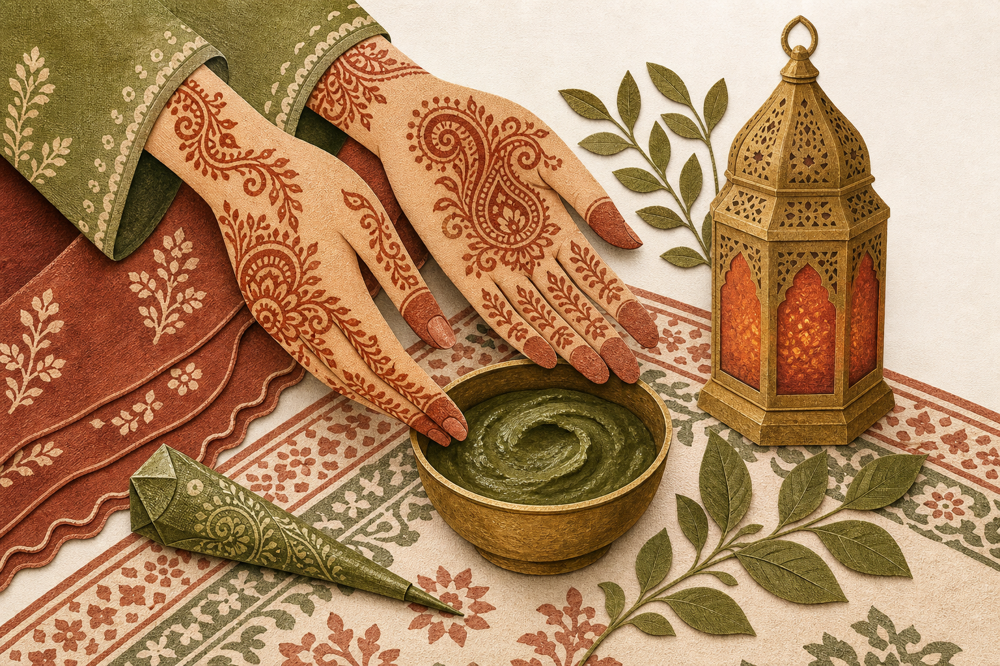
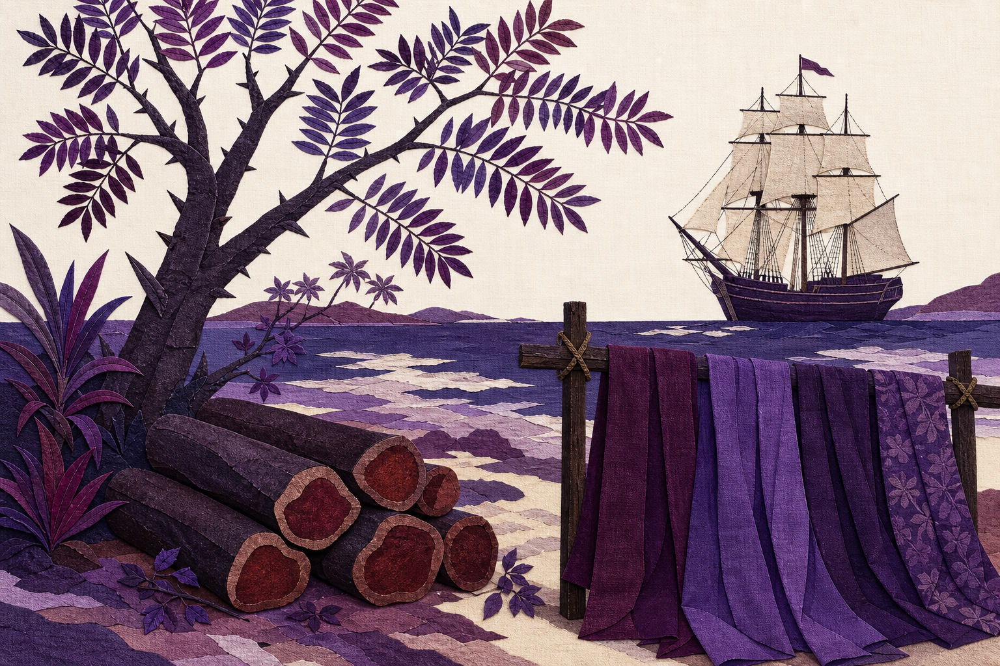

grow the plants
record the elders
fifty actions
carry the colour
Youth Action
Every tradition in this collection survives only if a new generation takes it up. Gathered below are all fifty actions from the ten posters — practical ways for students and youth groups to grow dye plants, record elders' knowledge, run workshops, and carry these living colours forward. Jump to any dye, or scroll through them all.

